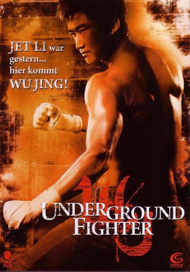

#8534 Underground Fighter
Alternativ: Fatal Contact (Englischer Titel)
 
 IMDB-Wertung: 6.6 / 10
IMDB-Wertung: 6.6 / 10  Metascore: 0
Metascore: 0 
Bei einer Aufführung der Peking Opera wird ein Promoter auf den jungen, vielversprechenden Kämpfer Kong aufmerksam. Das lukrative Angebot, an einigen illegalen Untergrundkämpfen teilzunehmen, lehnt Kong vorerst ab. Doch die hübsche Siu Tin kann ihn überzeugen, in den Ring zu steigen und wird fortan so etwas wie seine ständige Begleiterin. Der eigentlich zahme Kong entwickelt sich im Ring in ein richtiges Tier und so dauert es nicht lange, bis er einige beeindruckende Siege feiern kann und größere Promoter auf ihn aufmerksam werden. Eines Tages bekommt Kong den Befehl, einen Kampf absichtlich zu verlieren und als Druckmittel muss die zu diesem Zweck entführte Siu Tin herhalten. Soll Kong seines Stolzes wegen gewinnen oder soll er verlieren, um das Leben der ihm mittlerweile ans Herz gewachsenen Siu Tin zu retten?
Jahr: 2006
Dauer: 102 Minuten
FSK: 16
Land: Hong-Kong Studio: Tiberius FilmTonspuren:
Untertitel:
Auflösung: 1080p (1920x816) Größe: 6205 MB
Genre: Action
Regisseur: Dennis Law
Drehbuch: Dennis Law
Soundtrack: Tommy Wai
Darsteller:
 Jing Wu als Kong Ko
Jing Wu als Kong Ko- Ronald Cheng als Captain
 Siu-Fai Cheung als Ma Ho-Keung
Siu-Fai Cheung als Ma Ho-Keung Andy On als Silver Dragon
Andy On als Silver Dragon Timmy Hung als Portland Street Fighter
Timmy Hung als Portland Street Fighter Suet Lam als Soo
Suet Lam als Soo Xing Yu als King
Xing Yu als King- Tats Lau als Beggar
- Sze-Ming Lu als Wai
 Shiu Hung Hui als Worker Ming
Shiu Hung Hui als Worker Ming- Wong Chun als Worker Chi
 Richard Epcar als
Richard Epcar als - Miki Yeung als Siu Tin
- Theresa Fu als Chui Chi
 Ken Lo als Chan Sun
Ken Lo als Chan Sun- Yu Gu als Fai
- Marco Lok als Ricky
- Pounh Chong Soong als Referee
- Tung So als Chiu Fung
- Hin-Wai Au als Jet
- Hudson Leung als Mr. Ma
- Paul Smith als Killer K
- Man-Ching Chan als Fighter
- Tat-Kwong Chan als Old Fighter
- Cash Lee als Chan Sun's thug
- Jonathan Yat-Sing Lee als Old fighter's son (uncredited)
- Kenji Tanigaki als Gold Dragon (uncredited)
Datei: X:\HD-Eastern-Modern(N-Z)\Underground Fighter (2006, FSK16, 1920x816).mkv seit 19.03.2018
Festplatte: HD Eastern+Western
 Es gibt insgesamt 76 Filme in der Gruppe 'HD-Eastern-Modern(N-Z)'
Es gibt insgesamt 76 Filme in der Gruppe 'HD-Eastern-Modern(N-Z)'